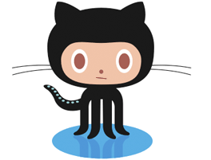

Resque Cheatsheet
Vote on HN Tweet Coded and used by the Github team, Resque is a Ruby queue for processing background jobs built on top of Redis. So far, I'm really enjoying the simple setup and simple API. The documentation gives a lot of good background information, and it's been working well overall. Follow the jump for a day-to-day usage reference.
Status
Resque.info
Resque.queues
Resque.redis
Resque.size(queue_name)
# check out what's coming next in the queue
# Resque.peek(archive_queue)
# Resque.peek(archive_queue, 1, 5)
# Resque.peek(archive_queue, 59, 30)
Resque.peek(queue_name, start=1, count=1)
Workers
Resque.workers
Resque.working
Resque.remove_worker(worker_id) # find worker_id from one of the above methods
Queue Management
# For testing a worker, I usually call the 'perform' method directly.
# Resque.enqueue(ArchiveWorker)
# Resque.enqueue(ArchiveWorker, 'matching', 'arguments')
Resque.enqueue(klass, *args)
Resque.dequeue(klass, *args)
Resque.remove_queue(queue_name)
Callbacks
# Each of these can either take a block, or be assigned to with a Proc
Resque.before_first_fork(&blk)
Resque.before_fork(&blk)
Resque.after_fork(&blk)
Problems
Redis connects to wrong host - Redis connects to localhost:6379 by default. Customize this by doing the following:
Resque.redis = 'hostname:port:db' # all 3 values are optional
Workers die stop after first batch completes - This is caused by the workers losing their connection to MySQL. See this gist for a fix and an explanation. Alternatively, you can add this line at the beginning of your 'perform' method:
ActiveRecord::Base.reconnect!